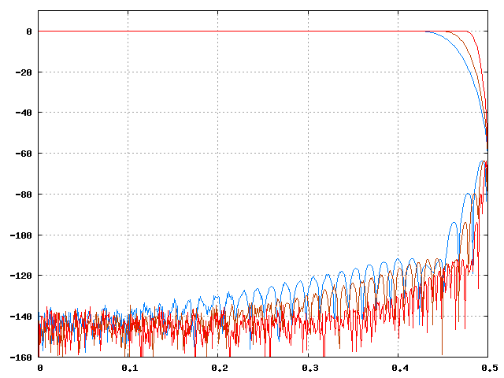
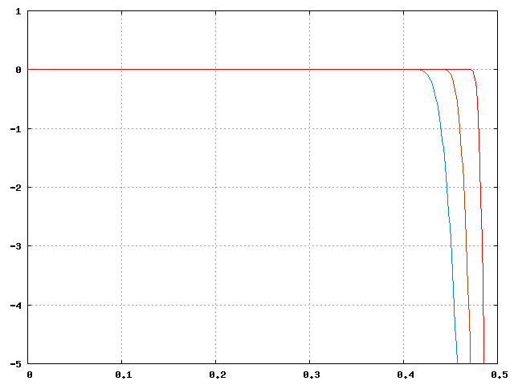
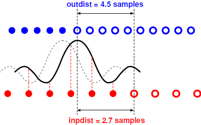

Libzita-resampler is a C++ library for resampling audio signals. It is designed to be used within a real-time processing context, to be fast, and to provide high-quality sample rate conversion.
The library operates on signals represented in single-precision floating point format. For multichannel operation both the input and output signals are assumed to be stored as interleaved samples.
The API allows a trade-off between quality and CPU load. For the latter a range of approximately 1:6 is available. Even at the highest quality setting libzita-resampler will be faster than most similar libraries providing the same quality, e.g. libsamplerate.
In many real-time resampling applications (e.g. an audio player), processing is driven by the ouput sample rate: each processing period requires a fixed number of output samples, and the input side has to adapt, providing whatever number of samples required. The inverse situation (less common, but possible) would be e.g. a recording application that writes an audio file at a rate that is different from the hardware sample rate. In that case the number of input samples is fixed for each processing period. The API provided by libzita-resampler is fully symmetric in this respect - it handles both situations in the exactly the same way, using the same application code.
Libzita-resampler provides two classes:
The Resampler class performs resampling at a fixed ratio F_out / F_in which is required to be ≥ 1/16 and be reducible to the form b / a with a, b integer and b ≤ 1000. This includes all the 'standard' ratios, e.g. 96000 / 44100 = 320 / 147. These restrictions allow for a more efficient implementation.
The VResampler class provides an arbitrary ratio r in the range 1/16 ≤ r ≤ 64 and which can variable within a range of 0.95 to 16.0 w.r.t. the originally configured one. The lower limit here is necessary because this class still uses a fixed multiphase filter, with only the phase step being variable. This class was developed for converting between two nominally fixed sample rates with a ratio which is not known exactly and may even drift slowly, e.g. when combining sound cards wich do not have a common word clock. This resampler is somewhat less efficient than the fixed ratio one since it has to interpolate filter coefficients, but the difference is marginal when used on multichannel signals.
Both classes provide essentially the same API, with only small differences
where necessary.
Libzita-resampler implements constant bandwidth resampling. In contrast to e.g. cubic interpolation it does not consider the actual shape of the waveform represented by the input samples, but rather operates in the spectral domain.
Let
Then the calculation performed by zita-resampler is equivalent to:
This is of course not how things are implemented in the resampler code. Only those samples that are actually output are computed, and the inserted zeros are never used. In practice this means there is a set of b different FIR filters that each output one sample in turn, in round-robin fashion. All these filters have the same frequency response, but different delays that correspond to the relative position in time of the input and output samples.
A real-world filter can't be perfect, it is always a compromise between complexity (CPU load) and performance. In the context of resampling this compromise manifests itself as deviations from the ideally flat frequency response, and as aliasing - the same phenomenon that occurs with AD and DA conversion. For aliasing, two cases need to be considered:
Upsampling. In this case F_min = F_in, and input signals below but near to F_in / 2 will also appear in the output just above this frequency. This is similar to DA conversion.
Downsampling. In this case F_min = F_out, and input signals above but near to F_out / 2 will also appear in the output just below this frequency. This is similar to AD conversion.
In the design of zita-resampler it was assumed that in most cases conversion will be between the 'standard' audio sample rates (44.1, 48, 88.2, 96, 192 kHz), and that consequently frequency response errors and aliasing will occur only above the upper limit of the audible frequency range. Given this assumption, some pragmatic trade-offs can be made.
The filter used by libzita-resampler is dimensioned to reach an attenuation of 60dB at the Nyquist frequency. The initialisation function takes a parameter named hlen that is in fact half the length of the symmetrical FIR filter expressend in samples at the rate F_min. The valid range for hlen is 16 to 96. The figure below shows the filter responses for hlen = 32, 48, and 96. The x axis is F / F_min, the y axis is in dB. The lower part of the traces is the mirrored continuation of the response above the Nyquist frequency, i.e. the aliasing. Note that 20 kHz corresponds to x = 0.416 for a sample rate of 48 kHz, and to x = 0.454 for a sample rate of 44.1 kHz.

The same traces with a reduced vertical range, showing the passband
response.

From these figures it should be clear that hlen = 32 should provide very high quality for F_min equal to 48 kHz or higher, while hlen = 48 should be sufficient for an F_min of 44.1 kHz. The validity of these assumptions was confirmed by a series of listening tests. If fact the conclusion of these test was that even at 44.1 kHz the subjects (all audio specialists or musicians) could not detect any significant difference between hlen values of 32 and 96.
The constructors of both classes do not initialise the object for a particular resampling rate, quality or number of channels - this is done by a separate function member which can be used as many times as necessary. This means you can allocate (V)Resampler objects before the actual resampling parameters are known.
The setup () member initialises a resampler for a combination of input sample rate, output sample rate, number of channels, and filter length. This function allocates and computes the filter coefficient tables and is definitely not RT-safe. The actual tables will be shared with other resampler instances if possible - the library maintains a reference-counted collection of them. After the initialisation by setup (), the process () member can be called repeatedly to actually resample audio signals. This function is RT-safe and can be used within e.g. a JACK callback. The clear () member restores the object to the initial state it has after construction, and is also called from the destructor. You can safely call setup () again without first calling clear () - doing this avoids recomputation of the filter coefficients in some cases.
Both classes have four public data members which are used as input and output parameters of process (), in the same way as you would use a C struct to pass parameters. These are:
unsigned int inp_count; // number of frames in the input buffer
unsigned int out_count; // number of frames in the output buffer
float *inp_data; // pointer to first input frame
float *out_data; // pointer to first output frame
As process () does its work, it increments the pointers and decrements the counts. The call returns when either of the counts is zero, i.e. when the input buffer is empty or the output buffer is full. You should then take appropriate action and if necessary call process () again.
When process () returns, the four parameter values exactly reflect those parts of both buffers that have not yet been used. One of them will be fully used, with the corresponding count being zero. The remaining part of the other, pointed to by the returned pointer, can always be replaced before the next call to process (), but this is entirely optional.
When for example inp_count is zero, you have to fill the input buffer again, or provide a new one, and re-initialise the input count and pointer. If at that time out_count is not zero, you can either leave the output parameters as they are for the next call to process (), or you could empty the part of the output buffer that has been filled and re-use it from the start, or provide a completely different one.
The same applies to the input buffer when it is not empty on return of process (): it can be left alone or be replaced. A number of input samples is stored internally between process () calls as part of the resampler state, but this never includes samples that have not yet been used. So you can 'revise' the input data, starting from the frame pointed to by the returned inp_data, up to the last moment.
All this means that both classes will interface easily with fixed input and output buffers, with dynamically generated input signals, and also with lock-free circular buffers.
Either of the two pointers can be NULL. When inp_data is zero, the effect is to insert zero-valued input samples, as if you had supplied a zero-filled buffer of length inp_count. When out_data is zero, input samples will be consumed, the internal state of the resampler will advance normally and out_count will decrement, but no output samples are written (in fact they are not even computed).
Note that libzita-resampler does not automatically insert zero-valued input samples at the start and end of the resampling process. The API makes it easy to add such padding, and doing this is left entirely up to the user.
The inpsize () member returns the lenght of the FIR filter expressed in input samples. At least this number of samples is required to produce an output sample. If k is the value returned by this function, then
Similar considerations apply at the end of the input data:
The inpdist () member returns the distance or delay expressed in sample
periods at the input rate, between the first output sample that will be ouput
by the next call to process () and the first input sample that will be
read (i.e. that is not yet part of the internal state).
In the picture below, the red dots represent input samples and the blue ones
are the output. Solid dots are samples already used or output. After a call
to process () the resampler object remains in a state ready to produce the next
output sample, except that it may have to input one or more new samples first.
The filter is aligned with the next output sample. In this case one more input
sample is required to compute it, and the input distance is 2.7.

After a resampler is prefilled with inpsize () / 2 - 1 samples as described above, inpdist () will be zero - the first output sample corresponds exactly to the first input. Note that without prefilling the distance is negative, which means that the first output sample corresponds to some point past the start of the input data.
The 'resample' application supplied with the library sources provides an example of how to use the Resampler class. For an example using VResampler you can have a look at zita_a2j and zita_ja2.
Public function members of the Resampler and VResampler classes. Functions listed without a class prefix are available for both classes.
Public data members of the Resampler and VResampler classes.
Resampler (void);
~Resampler (void);
Description: Constructor and destructor. The constructor just creates an object that takes
almost no memory but needs to be configured by setup () before it
can be used. The destructor calls clear ().
RT-safe: No
VResampler (void);
~VResampler (void);
Description: Constructor and destructor. The constructor just creates an object that takes
almost no memory but needs to be configured by setup () before it
can be used. The destructor calls clear ().
RT-safe: No
int Resampler::setup (unsigned int fs_inp, unsigned int fs_out, unsigned int nchan, unsigned int hlen);
Description: Configures the object for a combination of input / output sample rates, number
of channels, and filter lenght.
If the parameters are OK, creates the filter coefficient tables
or re-uses existing ones, allocates some internal resources, and returns via
reset ().
Parameters:
fs_inp, fs_out: The input and output sample rates. The ratio fs_out
/ fs_inp must be ≥ 1/16 and reducible to the form b / a
with a, b integer and b ≤ 1000.
nchan: Number of channels, must not be zero.
hlen: Half the lenght of the filter expressed in samples at the lower of
input and output rates. This parameter determines the 'quality' as explained
here. For any fixed combination of the other parameters,
cpu load will be roughly proportional to hlen. The valid range is
16 ≤ hlen ≤ 96.
Returns: Zero on success, non-zero otherwise.
Remark: It is perfectly safe to call this function again without
having called clear () first. If only the number
of channels is changed, doing this will avoid recalculation of the filter tables
even if they are not shared.
RT-safe: No
int VResampler::setup (double ratio, unsigned int nchan, unsigned int hlen);
Description: Configures the object for a combination of resampling ratio, number of channels,
and filter lenght.
If the parameters are OK, creates the filter coefficient tables or re-uses
existing ones, allocates some internal resources, and returns via
reset ().
Parameters:
ratio: The resampling ratio wich must be between 1/16 and 64.
nchan: Number of channels, must not be zero.
hlen: Half the lenght of the filter expressed in samples at the lower of
the input and output rates. This parameter determines the 'quality' as explained
here. For any fixed combination of the other parameters,
cpu load will be roughly proportional to hlen. The valid range is
16 ≤ hlen ≤ 96.
Returns: Zero on success, non-zero otherwise.
Remark: It is perfectly safe to call this function again without
having called clear () first. If only the number
of channels is changed, doing this will avoid recalculation of the filter tables
even if they are not shared.
RT-safe: No
void clear (void);
Description: Deallocates resources (if not shared) and returns the object to
the unconfigured state as after construction. Also called by the destructor.
RT-safe: No
int reset (void);
Description: Resets the internal state of the resampler. Any stored
input samples are cleared, the filter phase and the four
public data members are set to zero. This should be called before starting
resampling a new stream with the same configuration as the previous one.
Returns: Zero if the resampler is configured , non-zero otherwise.
RT-safe: Yes.
int process (void);
Description: Resamles the input signal until either the input buffer
is empty or the output buffer is full. Information on the input and output
buffers is passed to this function using the four public
data members described below. The same four values are updated on return.
Returns: Zero if the resampler is configured, non-zero otherwise.
RT-safe: Yes.
int nchan (void);
Description: Accessor.
Returns: The number of channels the resampler is configured for,
or zero if it is unconfigured. Input and output buffers are assumed to contain
this number of channels in interleaved format.
RT-safe: Yes
int inpisze (void);
Description: Accessor.
Returns: If the resampler is configured, the lenght of the
finite impulse filter expressed in samples at the input sample rate,
or zero otherwise. This value may be used to determine the number of
silence samples to insert at the start and end when resampling e.g.
an impulse response. See here for more about this.
This function was called 'filtlen ()' in previous releases.
RT-safe: Yes
double inpdist (void);
Description: Accessor.
Returns: If the resampler is configured, the distance between
the next output sample and the next input sample, expressed in sample
periods at the input rate, zero otherwise. See
here for more about this.
RT-safe: Yes
void VResampler::set_rratio (double ratio);
Description: Sets the resampling ratio relative to the one configured
by setup (). The valid range is 0.95 ≤
ratio ≤ 16.
Parameters:
ratio: The relative resampling ratio.
RT-safe: Yes
void VResampler::set_rrfilt (double time);
Description: Sets the time constant of the first order filter applied
on values set by set_rratio (). The time is
expressed as sample periods at the output rate. The default is zero, which
means changes are applied instantly.
Parameters:
time: The filter time constant.
RT-safe: Yes
unsigned int inp_count;
Description: Data member, input / output parameter of the process () function. This value is always equal to the number of frames in the input buffer that have not yet been read by the process () function. It should be set to the number of available frames before calling process ().
unsigned int out_count;
Description: Data member, input / output parameter of the process () function. This value is always equal to the number of frames in the output buffer that have not yet been written by the process () function. It should be set to the size of the output buffer before calling process ().
float *inp_data;
Description: Data member, input / output parameter of the process () function. If not zero (NULL), this points to the next frame in the input buffer that will be read by process (). If set to zero (NULL), the resampler will proceed normally but use zero-valued samples as input (still counted by inp_count).
float *out_data;
Description: Data member, input / output parameter of the process () function. If not zero (NULL), this points to the next frame in the output buffer that will be written by process (). If set to zero (NULL), the resampler will proceed normally but the output is discarded (but still counted by out_count).